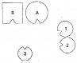
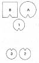
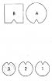
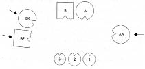

RUTH Hüznün gizli mutluluğun korunması olduğu cümlesi bam telime dokundu. Ama bundan bıktım artık. Köken ailemizi dizmek ve oradaki yerimi almak istiyorum. İzlenimim…
HELLINGER Açıklamana gerek yok. İstiyorsun, biz de yapacağız. Köken ailende kimler var?
RUTH Babam, annem, ikiz ablalarım ve ben. İkiz ablalarımdan büyüğü doğumundan dört hafta sonra ölmüş.
HELLINGER Ne olmuş?
RUTH Erken doğmuşlar. Uzun süre hastanede kalmışlar. Ardından annem ikizlerden küçüğünü eve çıkarabilmiş. Büyüğü hastanede kalmış, orada da ölmüş.
HELLINGER Aileye dahil olan başka birisi daha var mı?
RUTH Halam doğururken ölmüş, bundan kısa bir süre sonra da amcam kendini asmış.
HELLINGER Babanın ebeveyninin hayatında kayda değer bir olay var mı?
RUTH Oğullarının intiharından sonra karşılıklı ağır suçlamalar yaşanmış.
HELLINGER Bu, yas ve acının savuşturulmasına yarar. Tamam, şimdi aileni diz!
1. Resim

B Baba
A Anne
1 İlk çocuk, ikizlerden doğumdan sonra ölen büyüğü
2 İkinci çocuk, ikizlerden küçük olanı
3 Üçüncü çocuk, kız (=Ruth)
HELLINGER Ana baba bebeğin ölümünden ötürü mü birbirlerini suçluyorlardı?
RUTH Evet. Suçlamalar hastaneye yönelikti. Annem de kendisini suçluyordu. Çocuklardan birini eve çıkarmanın işini kolaylaştıracağı, evde tek bir çocukla yaşamaya alışmasını sağlayacağını söyleyenlere kulak vermişti. Bir de babama yönelen suçlamalar var ki bunu ben de yapıyorum. Sözünü geçirseydi annem diğer çocuğu da eve getirirdi.
HELLINGER Baba nasıl?
BABA Önce karımla birlikte kendimi çok iyi hissediyordum. İyi bir ilişki vardı. Ama çocuklar yanına yerleştirildiğinde temas kesildi. Şimdi bir mesafe hissediyorum. Sağımda bir boşluk algılıyorum. Orada bir şey eksik. En küçük kız önüme geçmiş, bir öğretmen filan gibi beni suçluyor, düzeltmek istiyor.
ANNE En küçük kızımın karşısında kendimi sanık sandalyesinde hissediyorum. Bana sert, kötü, suçlayıcı bakışlarla bakıyor.
İLK ÇOCUK Sol omzum çok acıyor. Tek hissettiğim de bu; omzumun acıması ile sol kolumun ağır ve uzun olduğu duygusu.
İKİNCİ ÇOCUK Küçük kardeşim karşıma geldiğinde gerçek bir titreme nöbeti geçirdim, büyük bir öfke duydum. Kendimi saldırıya uğramış hissettim. Ancak bakışlarımı başka birine çevirdiğimde bu duygu azaldı. İkizimin desteğine ihtiyaç duyduğumu hissediyorum. Benim için o çok önemli. Ana baba çok uzak.
HELLINGER Ruth’un temsilcisine En küçük kardeş nasıl?
ÜÇÜNCÜ ÇOCUK Önce ailenin moralini yükseltmek zorunda olduğumu düşündüm, ardından da ana babaya birbirleriyle nasıl iyi geçineceklerini öğretmek. Güler.
HELLINGER İşte bu özdeşleşme. Daha önceki birinin rolünü üstleniyor. Soru, bunun kim olabileceği? Ruth’a Annenin ailesinde ne olmuş?
RUTH Anneannem dört çocuğun en küçüğü. Üç kardeşi bir çocuk hastalığından on dört gün içinde ölmüşler. Yalnızca o hayatta kalmış.
HELLINGER Sen onunla özdeşleşmişsin. Kederini ve ana babanın iyi olmasından senin sorumlu olduğun duygusunu ondan almışsın.
Ölen ikiz tekine Şimdi ana babanın önünde oturup sırtını onlara daya. -Nasıl böyle?
İLK ÇOCUK Çok daha iyi. Omuz ağrım azalıyor.
Hellinger resmi değiştirir.
2. Resim

HELLINGER Ana baba için böylesi nasıl?
BABA İyi. Karımdan yana iyi bir temas var. Çocuklar burada. Dengeli böyle.
ANNE İyi.
HELLINGER Ana babaya Onu sevgiyle kutsar gibi ikiniz de bir elinizi ölen çocuğun başına koyun.
En küçük kardeş şimdi nasıl?
ÜÇÜNCÜ ÇOCUK Kız kardeşle aynı hizaya yerleştirildiğim an üstümden yük kalktı.
İKİNCİ ÇOCUK İkiz kardeşimi aldığında çok kötüydü. Onu özlüyorum. Ama burada buna alışabilirim. Burada ne kadar uzun kalırsam o kadar iyileşiyor.
İLK ÇOCUK Böyle iyi.
HELLINGER Ana babandan yeterince aldığında kardeşinin yanına geçebilirsin.
3. Resim

HELLINGER Böyle nasıl?
İLK ÇOCUK İyi.
ÜÇÜNCÜ ÇOCUK İyi. Tabii böylece önemimi de kaybediyorum. Üç kardeş de güler.
BABA İyi.
ANNE Evet, iyi.
HELLINGER Ruth’a Kendi yerini almak ister misin?
Ruth dizimde kendi yerini alarak çevresine bakar. Ardından Hellinger Anneanneyi anne tarafına, doğum yaparken ölen kız kardeşiyle kendisini asan erkek kardeşini de baba tarafına yerleştirir.
4. Resim

AA Anneanne
BK Babanın kız kardeşi
BE Babanın erkek kardeşi
HELLINGER Ruth’a Anneannenin orada durması senin için nasıl?
RUTH Orada durduğunda iyi. Daha yakına geldiğinde üzüntü verici.
HELLINGER Anneanne nasıl?
ANNEANNE İyi.
HELLINGER Orası onurlandırıcı bir yer. -Ölen kardeşlerinin orada durması baba için nasıl?
BABA İyi. Şimdi o boşluk doldu artık.
RUTH Benim için böyle iyi.
HELLINGER Tamam, bu kadar.
Bedel ödemeden mirastan pay almak
RUTH Halamdan bir kaç parça gümüş kaldı bana. Adımızın ilk harfleri aynı.
HELLINGER Onları geri vermek zorundasın.
RUTH Peki nasıl olacak bu?
HELLINGER Kimin söz konusu olduğunu bilmiyorum ama geri vermek zorundasın. Anladın mı?
RUTH Evet.
HELLINGER Yoksa onun mutsuzluğundan yarar sağlamış olursun ki burada bu olmaz. Etkisi kötü olur.
ANNE Sen bunun geri verilmesi gerektiğini söylemeden önce göğsümde bir baskı vardı. O buna razı olduğunda geçti.
RUTH Gümüş kaşıklar gözümün önünde. Bunlara bu kadar bağlı oluşum tuhaf! Gerçekten çok özel bir yerleri var. Güler.
HELLINGER Buna ne dendiğini biliyor musun? -Mutsuzluk sevgisi.
FRANK Geri verme konusunda aklıma bir şey geldi: Vaftiz babam olan o eşcinsel amcamdan bana yakut bir yüzük kaldı.
HELLINGER Ben olsam onu saklardım.
FRANK Hiç takmadım. Çekmecemde duruyor.
HELLINGER Evet ama senin o. Ben olsam o yüzüğe saygı duyardım.
FRANK Öylece orada mı bırakayım?
HELLINGER Evet. Belirli kurallar yoktur ama böyle bir şeyin doğru olup olmadığı hemen hissedilir. Bu nesnelerde etkisini gösteren bir şey takılı kalmıştır. Hayata katılırlar. Cansız, ölü değildirler. Bunu bilmek gerek.
Ruth’a Gümüş kaşıkların yakın birisine armağan edilmesi gerek.
RUTH Aklıma henüz kimse gelmiyor.
HELLINGER Tamam, bu resmi içinde taşı.
WILHELM Bu konuda bir sorum var. Ruth’un bu kalıtı geri vermesi ya da başka birine vermesi gerektiğini söyledin. Tersi de oluyor mu? Yani insanın bir kalıtı alması ya da hatta talep etmesi gerektiği durumlar?
HELLINGER Kimi zaman bir şeyi devralma yükümlülüğü vardır.
WILHELM Yani verilen bir şeyi mi?
HELLINGER Hayır, her zaman değil. Ama bazen bağlılık, sözgelimi bir işin devralınmasını gerekli kılar.
WILHELM Ebeveynin işini mi?
HELLINGER Evet ve bunu, bu sorumluluğu geri çeviren kişi kendi seçiminde belki başarısızlığa uğrayacaktır. Koşullara bağlıdır bu.
WILHELM Daha somut bir sorum var. Ebeveyn iki çocuğundan birine, “Her şeyi sen alıyorsun”, diğerine ise “Sen hiçbir şey almıyorsun” dediğinde ne olur?
HELLINGER O zaman her şeyin kendisine bırakıldığı çocuk bunu alır ve daha sonra yarısını kardeşine verir. Böylece herkese adil davranılmış olur.
WILHELM Bu sorumu bütünüyle yanıtlıyor.
DAGMAR Bu konuda benim de bir sorum var. Varsayalım anne kızına bir miras bırakıyor ama bu kızın sırtına büyük bir vergi yükümlülüğü yükleyecek, öyle ki aldığından çoğunu ödemek zorunda kalacak. Kız bu durumda da mirası kabul etmek zorunda mıdır?
HELLINGER Çocuk ebeveyninin borçlarını devralmak zorunda değildir. Bu, ana babanın kişisel konusudur, çocuğun değil.
DAGMAR Yani daha önceden almamaya karar verebilir.
HELLINGER Bunu yapmada bütünüyle özgürdür. Ancak ana babanın huzur içinde olması gerekir. Bundan ötürü böyle yapacağını rahatlıkla söyleyebilir. Miras başka türlü bir yük taşıdığında, örneğin haksızca edinilmiş olduğunda da çocuğun bunun dışında kalması daha iyi olacaktır. Yoksa kendisine ait olmayan bir kötülükle kilitlenecektir.